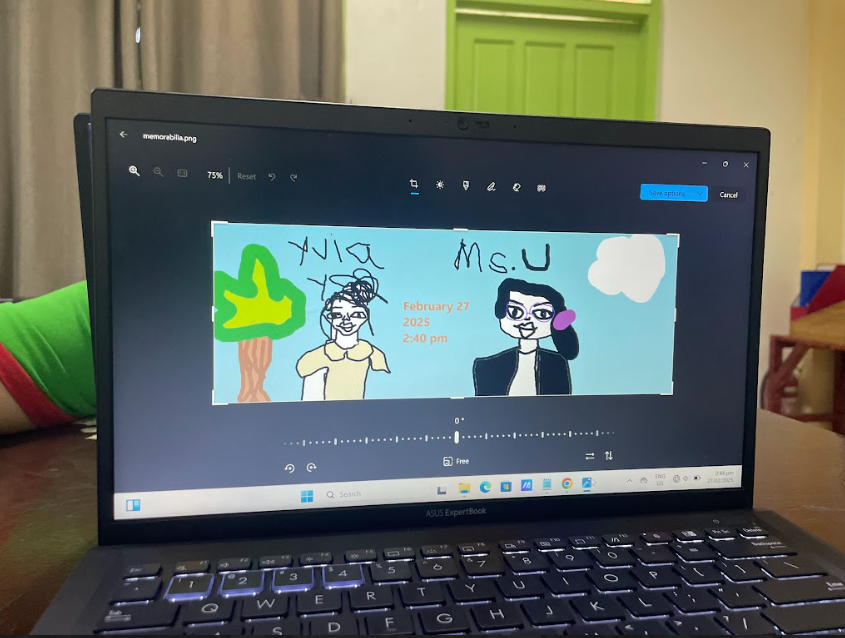

Reflection
The fourth quarter went by so fast but I learned a lot!
This quarter, we focused more on JavaScript.
I enjoyed learning it involves interaction a lot of user interaction.
I didn't have that much trouble with the lessons since they were fairly easy.
The lesson I enjoyed most was lesson 2, which is conditional statements.
However, I had slight trouble with lesson 4, which covered loops.
I still don't fully understand the difference between each type.
Anyway, as grade 9 ends, I'd like to express my gratitude to everyone: my teacher and classmates.
ICT was really fun with them, and I'll definitely miss my experiences in the ICT room!
One core memory I have is me drawing Ms. Uminga and I on MS Paint while Ms. Uminga's laptop suddenly decided to update.

psst! click the "Ict Portfolio.com" logo on the top left to go back to the homepage :-D